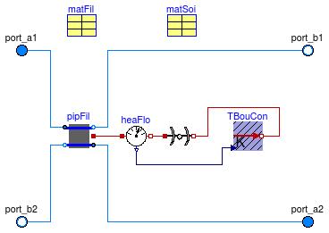
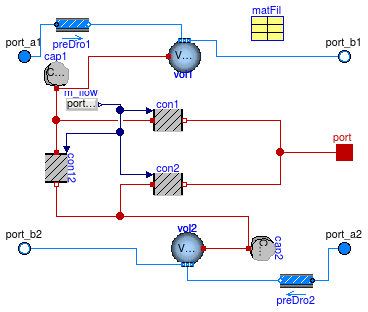
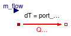
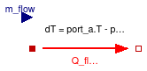

This package contains base classes that are used to construct the models in Buildings.Fluid.HeatExchangers.Boreholes.
Extends from Modelica.Icons.BasesPackage (Icon for packages containing base classes).
| Name | Description |
|---|---|
| BoreholeSegment | Vertical segment of a borehole |
| HexInternalElement | Internal part of a borehole |
| BoreholeResistance | Thermal resistance of the borehole |
| InterferenceResistance | Total interference resistance between the two pipes of a borehole |
| PartialBoreholeResistance | Partial model for thermal resistance of the borehole |
| SingleUTubeBoundaryCondition | Prescribed temperature at the outer boundary of a single U tube borehole |
| ExtendableArray | class used to create the external object: ExtendableArray |
| Calculate the internal resistance of the borehole | |
| Calculate the total thermal resistance of the borehole from the fluid to the soil | |
| Store the value u at the element n in the external object, and return the value of the element i | |
| Calculates the factorial value of the input | |
| Power series used to compute far-field temperature | |
| Calculate the temperature drop of the soil at the external boundary of the cylinder | |
| Example models to test base classes |

Horizontal layer that is used to model a U-tube borehole heat exchanger. This model combines three models, each simulating a different aspect of a borehole heat exchanger.
The instance pipFil computes the heat transfer in the pipes and the filling material.
This computation is done using the model
Buildings.Fluid.Boreholes.BaseClasses.HexInternalElement.
The instance soi computes transient and steady state heat transfer in the soil using a vertical cylinder.
The computation is done using the model
Buildings.HeatTransfer.Conduction.SingleLayerCylinder.
The model TBouCon computes the far-field temperature boundary condition, i.e., the temperature at the outer
surface of the above cylindrical heat transfer computation.
The computation is done using the model
Buildings.Fluid.Boreholes.BaseClasses.TemperatureBoundaryCondition.
Extends from Buildings.Fluid.Interfaces.PartialFourPortInterface (Partial model transporting fluid between two ports without storing mass or energy), Buildings.Fluid.Interfaces.TwoPortFlowResistanceParameters (Parameters for flow resistance for models with two ports), Buildings.Fluid.Interfaces.LumpedVolumeDeclarations (Declarations for lumped volumes).
| Type | Name | Default | Description |
|---|---|---|---|
| replaceable package Medium1 | PartialMedium | Medium 1 in the component | |
| replaceable package Medium2 | PartialMedium | Medium 2 in the component | |
| replaceable package Medium | PartialMedium | Medium in the component | |
| Radius | rBor | 0.1 | Radius of the borehole [m] |
| Height | hSeg | Height of the element [m] | |
| Length | xC | 0.05 | Shank spacing, defined as the distance between the center of a pipe and the center of the borehole [m] |
| Real | B0 | 17.44 | Shape coefficient for grout resistance |
| Real | B1 | -0.6052 | Shape coefficient for grout resistance |
| Nominal condition | |||
| MassFlowRate | m1_flow_nominal | m_flow_nominal | Nominal mass flow rate [kg/s] |
| MassFlowRate | m2_flow_nominal | m_flow_nominal | Nominal mass flow rate [kg/s] |
| Pressure | dp_nominal | Pressure [Pa] | |
| MassFlowRate | m_flow_nominal | Nominal mass flow rate [kg/s] | |
| Initialization | |||
| MassFlowRate | m1_flow.start | 0 | Mass flow rate from port_a1 to port_b1 (m1_flow > 0 is design flow direction) [kg/s] |
| Pressure | dp1.start | 0 | Pressure difference between port_a1 and port_b1 [Pa] |
| MassFlowRate | m2_flow.start | 0 | Mass flow rate from port_a2 to port_b2 (m2_flow > 0 is design flow direction) [kg/s] |
| Pressure | dp2.start | 0 | Pressure difference between port_a2 and port_b2 [Pa] |
| Soil | |||
| Generic | matSoi | redeclare parameter Building... | Thermal properties of soil |
| Radius | rExt | 3 | Radius of the soil used for the external boundary condition [m] |
| Temperature | TExt_start | 283.15 | Initial far field temperature [K] |
| Integer | nSta | 10 | Number of state variables in the soil |
| Time | samplePeriod | 604800 | Sample period for the external boundary condition [s] |
| Filling material | |||
| Generic | matFil | redeclare parameter Building... | Thermal properties of the filling material |
| Temperature | TFil_start | 283.15 | Initial temperature of the filling material [K] |
| Tubes | |||
| Radius | rTub | 0.02 | Radius of the tubes [m] |
| ThermalConductivity | kTub | 0.5 | Thermal conductivity of the tubes [W/(m.K)] |
| Length | eTub | 0.002 | Thickness of the tubes [m] |
| Assumptions | |||
| Boolean | allowFlowReversal1 | allowFlowReversal | = true to allow flow reversal in medium 1, false restricts to design direction (port_a -> port_b) |
| Boolean | allowFlowReversal2 | allowFlowReversal | = true to allow flow reversal in medium 2, false restricts to design direction (port_a -> port_b) |
| Boolean | allowFlowReversal | true | = true to allow flow reversal, false restricts to design direction (port_a -> port_b) |
| Advanced | |||
| Initialization | |||
| SpecificEnthalpy | h_outflow_a1_start | Medium1.h_default | Start value for enthalpy flowing out of port a1 [J/kg] |
| SpecificEnthalpy | h_outflow_b1_start | Medium1.h_default | Start value for enthalpy flowing out of port b1 [J/kg] |
| SpecificEnthalpy | h_outflow_a2_start | Medium2.h_default | Start value for enthalpy flowing out of port a2 [J/kg] |
| SpecificEnthalpy | h_outflow_b2_start | Medium2.h_default | Start value for enthalpy flowing out of port b2 [J/kg] |
| MassFlowRate | m1_flow_small | m_flow_small | Small mass flow rate for regularization of zero flow [kg/s] |
| MassFlowRate | m2_flow_small | m_flow_small | Small mass flow rate for regularization of zero flow [kg/s] |
| Boolean | homotopyInitialization | true | = true, use homotopy method |
| MassFlowRate | m_flow_small | 1E-4*abs(m_flow_nominal) | Small mass flow rate for regularization of zero flow [kg/s] |
| Diagnostics | |||
| Boolean | show_V_flow | false | = true, if volume flow rate at inflowing port is computed |
| Boolean | show_T | false | = true, if actual temperature at port is computed (may lead to events) |
| Flow resistance | |||
| Boolean | computeFlowResistance | true | =true, compute flow resistance. Set to false to assume no friction |
| Boolean | from_dp | false | = true, use m_flow = f(dp) else dp = f(m_flow) |
| Boolean | linearizeFlowResistance | false | = true, use linear relation between m_flow and dp for any flow rate |
| Real | deltaM | 0.1 | Fraction of nominal flow rate where flow transitions to laminar |
| Dynamics | |||
| Equations | |||
| Dynamics | energyDynamics | Modelica.Fluid.Types.Dynamic... | Formulation of energy balance |
| Dynamics | massDynamics | energyDynamics | Formulation of mass balance |
| Initialization | |||
| AbsolutePressure | p_start | Medium.p_default | Start value of pressure [Pa] |
| Temperature | T_start | TFil_start | Start value of temperature [K] |
| MassFraction | X_start[Medium.nX] | Medium.X_default | Start value of mass fractions m_i/m [kg/kg] |
| ExtraProperty | C_start[Medium.nC] | fill(0, Medium.nC) | Start value of trace substances |
| ExtraProperty | C_nominal[Medium.nC] | fill(1E-2, Medium.nC) | Nominal value of trace substances. (Set to typical order of magnitude.) |
| Type | Name | Description |
|---|---|---|
| replaceable package Medium1 | Medium 1 in the component | |
| replaceable package Medium2 | Medium 2 in the component | |
| FluidPort_a | port_a1 | Fluid connector a1 (positive design flow direction is from port_a1 to port_b1) |
| FluidPort_b | port_b1 | Fluid connector b1 (positive design flow direction is from port_a1 to port_b1) |
| FluidPort_a | port_a2 | Fluid connector a2 (positive design flow direction is from port_a2 to port_b2) |
| FluidPort_b | port_b2 | Fluid connector b2 (positive design flow direction is from port_a2 to port_b2) |
| replaceable package Medium | Medium in the component | |
model BoreholeSegment "Vertical segment of a borehole"
extends Buildings.Fluid.Interfaces.PartialFourPortInterface(
redeclare final package Medium1 = Medium,
redeclare final package Medium2 = Medium,
final m1_flow_nominal = m_flow_nominal,
final m2_flow_nominal = m_flow_nominal,
final m1_flow_small = m_flow_small,
final m2_flow_small = m_flow_small,
final allowFlowReversal1=allowFlowReversal,
final allowFlowReversal2=allowFlowReversal);
extends Buildings.Fluid.Interfaces.TwoPortFlowResistanceParameters;
extends Buildings.Fluid.Interfaces.LumpedVolumeDeclarations(T_start=TFil_start);
replaceable package Medium = Modelica.Media.Interfaces.PartialMedium
"Medium in the component";
replaceable parameter Buildings.HeatTransfer.Data.Soil.Generic
matSoi
"Thermal properties of soil";
replaceable parameter Buildings.HeatTransfer.Data.BoreholeFillings.Generic matFil
"Thermal properties of the filling material";
parameter Modelica.SIunits.MassFlowRate m_flow_nominal
"Nominal mass flow rate";
parameter Modelica.SIunits.MassFlowRate m_flow_small(min=0) = 1E-4*abs(m_flow_nominal)
"Small mass flow rate for regularization of zero flow";
parameter Boolean homotopyInitialization = true "= true, use homotopy method";
parameter Modelica.SIunits.Radius rTub=0.02 "Radius of the tubes";
parameter Modelica.SIunits.ThermalConductivity kTub=0.5
"Thermal conductivity of the tubes";
parameter Modelica.SIunits.Length eTub=0.002 "Thickness of the tubes";
parameter Modelica.SIunits.Temperature TFil_start=283.15
"Initial temperature of the filling material";
parameter Modelica.SIunits.Radius rExt=3
"Radius of the soil used for the external boundary condition";
parameter Modelica.SIunits.Temperature TExt_start=283.15
"Initial far field temperature";
parameter Integer nSta(min=1) = 10 "Number of state variables in the soil";
parameter Modelica.SIunits.Time samplePeriod=604800
"Sample period for the external boundary condition";
parameter Modelica.SIunits.Radius rBor=0.1 "Radius of the borehole";
parameter Modelica.SIunits.Height hSeg "Height of the element";
parameter Modelica.SIunits.Length xC=0.05
"Shank spacing, defined as the distance between the center of a pipe and the center of the borehole";
parameter Real B0=17.44 "Shape coefficient for grout resistance";
parameter Real B1=-0.6052 "Shape coefficient for grout resistance";
parameter Boolean allowFlowReversal = true
"= true to allow flow reversal, false restricts to design direction (port_a -> port_b)";
Buildings.Fluid.HeatExchangers.Boreholes.BaseClasses.HexInternalElement pipFil(
redeclare final package Medium = Medium,
final matFil=matFil,
final hSeg=hSeg,
final rTub=rTub,
final eTub=eTub,
final kTub=kTub,
final kSoi=matSoi.k,
final xC=xC,
final rBor=rBor,
final TFil_start=TFil_start,
final B0=B0,
final B1=B1,
final m1_flow_nominal=m_flow_nominal,
final m2_flow_nominal=m_flow_nominal,
final dp1_nominal=dp_nominal,
final dp2_nominal=0,
final from_dp1=from_dp,
final from_dp2=from_dp,
final linearizeFlowResistance1=linearizeFlowResistance,
final linearizeFlowResistance2=linearizeFlowResistance,
final deltaM1=deltaM,
final deltaM2=deltaM,
final m1_flow_small=m_flow_small,
final m2_flow_small=m_flow_small,
final allowFlowReversal1=allowFlowReversal,
final allowFlowReversal2=allowFlowReversal,
final homotopyInitialization=homotopyInitialization,
final show_V_flow=show_V_flow,
final energyDynamics=energyDynamics,
final massDynamics=massDynamics,
final p1_start=p_start,
T1_start=T_start,
X1_start=X_start,
C1_start=C_start,
C1_nominal=C_nominal,
final p2_start=p_start,
T2_start=T_start,
X2_start=X_start,
C2_start=C_start,
C2_nominal=C_nominal)
"Internal part of the borehole including the pipes and the filling material";
Buildings.HeatTransfer.Conduction.SingleLayerCylinder soi(
final material=matSoi,
final h=hSeg,
final nSta=nSta,
final r_a=rBor,
final r_b=rExt,
final steadyStateInitial=false,
final TInt_start=TFil_start,
final TExt_start=TExt_start) "Heat conduction in the soil";
Buildings.Fluid.HeatExchangers.Boreholes.BaseClasses.SingleUTubeBoundaryCondition
TBouCon(
final matSoi=matSoi,
final rExt=rExt,
final hSeg=hSeg,
final TExt_start=TExt_start,
final samplePeriod=samplePeriod)
"Thermal boundary condition for the far-field";
protected
Modelica.Thermal.HeatTransfer.Sensors.HeatFlowSensor heaFlo;
equation
connect(pipFil.port_b1, port_b1);
connect(pipFil.port_a2, port_a2);
connect(pipFil.port_b2, port_b2);
connect(pipFil.port, heaFlo.port_a);
connect(heaFlo.port_b, soi.port_a);
connect(soi.port_b, TBouCon.port);
connect(port_a1, pipFil.port_a1);
connect(heaFlo.Q_flow, TBouCon.Q_flow);
end BoreholeSegment;

Model for the heat transfer between the fluid and within the borehole filling. This model computes the dynamic response of the fluid in the tubes, and the heat transfer between the fluid and the borehole filling, and the heat storage within the fluid and the borehole filling.
The heat conduction in the filling material is modeled using three three resistances model that are arranged in a triangular configuration. Two of these resistances represent the heat conduction from the fluids to the external radius of the borehole, and the other resistance represents the thermal interference between the two pipes.
The resistance between the fluid and the borehole wall are the sum of the convective resistance inside the tubes, the conductive resistance of the tube wall and the conductive resistance of the filling material. They are obtained using
GCon = 2 π hseg rtub hin ,
Gtub = 4 π ktub hseg ⁄ ln( ( rtub+etub ) ⁄ rtub ),
Gfil= kfil hseg β0 ( rBor ⁄ rtub ) β1 ,
where hseg is the height of the tube, hin is the convection coefficient, ktub is the thermal conductivity of the tube, etub is the thickness of the tube, and β0, β1 are the resistance shape factor coefficients (Paul, 1996). Paul's shape factors are based on experimental and finite element analysis of typical borehole. The default values used for these coefficients are β0= 20.100 and β1=-0.94467. Values listed by Paul are given in the table below.
| pipe spacing | β0 | β1 |
|---|---|---|
| close | 20.100377 | -0.94467 |
| middle | 17.44 | -0.6052 |
| spaced | 21.91 | -0.3796 |
The resistances between the fluid and the borehole wall are computed in Buildings.Fluid.HeatExchangers.Boreholes.BaseClasses.BoreholeResistance. The resistance for the interference of the pipes is computed in Buildings.Fluid.HeatExchangers.Boreholes.BaseClasses.InterferenceResistance.
Extends from Buildings.Fluid.Interfaces.FourPortHeatMassExchanger (Model transporting two fluid streams between four ports with storing mass or energy).
| Type | Name | Default | Description |
|---|---|---|---|
| replaceable package Medium1 | PartialMedium | Medium 1 in the component | |
| replaceable package Medium2 | PartialMedium | Medium 2 in the component | |
| replaceable package Medium | Modelica.Media.Interfaces.Pa... | Medium in the component | |
| ThermalConductivity | kSoi | Thermal conductivity of the soil used for the calculation of the internal interference resistance [W/(m.K)] | |
| Radius | rBor | Radius of the borehole [m] | |
| Height | hSeg | Height of the element [m] | |
| Real | B0 | 17.44268 | Shape coefficient for grout resistance |
| Real | B1 | -0.60515 | Shape coefficient for grout resistance |
| Length | xC | 0.05 | Shank spacing definied as half the center-to-center distance between the two pipes [m] |
| Nominal condition | |||
| MassFlowRate | m1_flow_nominal | Nominal mass flow rate [kg/s] | |
| MassFlowRate | m2_flow_nominal | Nominal mass flow rate [kg/s] | |
| Pressure | dp1_nominal | Pressure [Pa] | |
| Pressure | dp2_nominal | Pressure [Pa] | |
| Initialization | |||
| MassFlowRate | m1_flow.start | 0 | Mass flow rate from port_a1 to port_b1 (m1_flow > 0 is design flow direction) [kg/s] |
| Pressure | dp1.start | 0 | Pressure difference between port_a1 and port_b1 [Pa] |
| MassFlowRate | m2_flow.start | 0 | Mass flow rate from port_a2 to port_b2 (m2_flow > 0 is design flow direction) [kg/s] |
| Pressure | dp2.start | 0 | Pressure difference between port_a2 and port_b2 [Pa] |
| Filling material | |||
| Generic | matFil | redeclare parameter Building... | Thermal properties of the filling material |
| Temperature | TFil_start | 283.15 | Initial temperature of the filling material [K] |
| Pipes | |||
| Radius | rTub | 0.02 | Radius of the tubes [m] |
| ThermalConductivity | kTub | 0.5 | Thermal conductivity of the tubes [W/(m.K)] |
| Length | eTub | 0.002 | Thickness of the tubes [m] |
| Assumptions | |||
| Boolean | allowFlowReversal1 | system.allowFlowReversal | = true to allow flow reversal in medium 1, false restricts to design direction (port_a -> port_b) |
| Boolean | allowFlowReversal2 | system.allowFlowReversal | = true to allow flow reversal in medium 2, false restricts to design direction (port_a -> port_b) |
| Advanced | |||
| MassFlowRate | m1_flow_small | 1E-4*abs(m1_flow_nominal) | Small mass flow rate for regularization of zero flow [kg/s] |
| MassFlowRate | m2_flow_small | 1E-4*abs(m2_flow_nominal) | Small mass flow rate for regularization of zero flow [kg/s] |
| Boolean | homotopyInitialization | true | = true, use homotopy method |
| Diagnostics | |||
| Boolean | show_V_flow | false | = true, if volume flow rate at inflowing port is computed |
| Boolean | show_T | false | = true, if actual temperature at port is computed (may lead to events) |
| Flow resistance | |||
| Medium 1 | |||
| Boolean | from_dp1 | false | = true, use m_flow = f(dp) else dp = f(m_flow) |
| Boolean | linearizeFlowResistance1 | false | = true, use linear relation between m_flow and dp for any flow rate |
| Real | deltaM1 | 0.1 | Fraction of nominal flow rate where flow transitions to laminar |
| Medium 2 | |||
| Boolean | from_dp2 | false | = true, use m_flow = f(dp) else dp = f(m_flow) |
| Boolean | linearizeFlowResistance2 | false | = true, use linear relation between m_flow and dp for any flow rate |
| Real | deltaM2 | 0.1 | Fraction of nominal flow rate where flow transitions to laminar |
| Dynamics | |||
| Nominal condition | |||
| Time | tau1 | Modelica.Constants.pi*rTub^2... | Time constant at nominal flow [s] |
| Time | tau2 | Modelica.Constants.pi*rTub^2... | Time constant at nominal flow [s] |
| Equations | |||
| Dynamics | energyDynamics | Modelica.Fluid.Types.Dynamic... | Formulation of energy balance |
| Dynamics | massDynamics | energyDynamics | Formulation of mass balance |
| Initialization | |||
| Medium 1 | |||
| AbsolutePressure | p1_start | Medium1.p_default | Start value of pressure [Pa] |
| Temperature | T1_start | TFil_start | Start value of temperature [K] |
| MassFraction | X1_start[Medium1.nX] | Medium1.X_default | Start value of mass fractions m_i/m [kg/kg] |
| ExtraProperty | C1_start[Medium1.nC] | fill(0, Medium1.nC) | Start value of trace substances |
| ExtraProperty | C1_nominal[Medium1.nC] | fill(1E-2, Medium1.nC) | Nominal value of trace substances. (Set to typical order of magnitude.) |
| Medium 2 | |||
| AbsolutePressure | p2_start | Medium2.p_default | Start value of pressure [Pa] |
| Temperature | T2_start | TFil_start | Start value of temperature [K] |
| MassFraction | X2_start[Medium2.nX] | Medium2.X_default | Start value of mass fractions m_i/m [kg/kg] |
| ExtraProperty | C2_start[Medium2.nC] | fill(0, Medium2.nC) | Start value of trace substances |
| ExtraProperty | C2_nominal[Medium2.nC] | fill(1E-2, Medium2.nC) | Nominal value of trace substances. (Set to typical order of magnitude.) |
| Type | Name | Description |
|---|---|---|
| replaceable package Medium1 | Medium 1 in the component | |
| replaceable package Medium2 | Medium 2 in the component | |
| FluidPort_a | port_a1 | Fluid connector a1 (positive design flow direction is from port_a1 to port_b1) |
| FluidPort_b | port_b1 | Fluid connector b1 (positive design flow direction is from port_a1 to port_b1) |
| FluidPort_a | port_a2 | Fluid connector a2 (positive design flow direction is from port_a2 to port_b2) |
| FluidPort_b | port_b2 | Fluid connector b2 (positive design flow direction is from port_a2 to port_b2) |
| replaceable package Medium | Medium in the component | |
| HeatPort_a | port | Heat port that connects to filling material |
model HexInternalElement "Internal part of a borehole"
extends Buildings.Fluid.Interfaces.FourPortHeatMassExchanger(
redeclare final package Medium1 = Medium,
redeclare final package Medium2 = Medium,
T1_start=TFil_start,
T2_start=TFil_start,
final tau1=Modelica.Constants.pi*rTub^2*hSeg*rho1_nominal/m1_flow_nominal,
final tau2=Modelica.Constants.pi*rTub^2*hSeg*rho2_nominal/m2_flow_nominal,
final show_T=false,
vol1(final energyDynamics=energyDynamics,
final massDynamics=massDynamics,
final prescribedHeatFlowRate=false,
final homotopyInitialization=homotopyInitialization,
final allowFlowReversal=allowFlowReversal1,
final V=m2_flow_nominal*tau2/rho2_nominal,
final m_flow_small=m1_flow_small),
final vol2(final energyDynamics=energyDynamics,
final massDynamics=massDynamics,
final prescribedHeatFlowRate=false,
final homotopyInitialization=homotopyInitialization,
final V=m1_flow_nominal*tau1/rho1_nominal,
final m_flow_small=m2_flow_small));
replaceable package Medium = Modelica.Media.Interfaces.PartialMedium
"Medium in the component";
replaceable parameter Buildings.HeatTransfer.Data.BoreholeFillings.Generic matFil
"Thermal properties of the filling material";
parameter Modelica.SIunits.Radius rTub=0.02 "Radius of the tubes";
parameter Modelica.SIunits.ThermalConductivity kTub=0.5
"Thermal conductivity of the tubes";
parameter Modelica.SIunits.Length eTub=0.002 "Thickness of the tubes";
parameter Modelica.SIunits.ThermalConductivity kSoi
"Thermal conductivity of the soil used for the calculation of the internal interference resistance";
parameter Modelica.SIunits.Temperature TFil_start=283.15
"Initial temperature of the filling material";
parameter Modelica.SIunits.Radius rBor "Radius of the borehole";
parameter Modelica.SIunits.Height hSeg "Height of the element";
parameter Real B0=17.44268 "Shape coefficient for grout resistance";
parameter Real B1=-0.60515 "Shape coefficient for grout resistance";
parameter Modelica.SIunits.Length xC=0.05
"Shank spacing definied as half the center-to-center distance between the two pipes";
Modelica.Thermal.HeatTransfer.Interfaces.HeatPort_a port
"Heat port that connects to filling material";
protected
final parameter Modelica.SIunits.SpecificHeatCapacity cpFil=matFil.c
"Specific heat capacity of the filling material";
final parameter Modelica.SIunits.ThermalConductivity kFil=matFil.k
"Thermal conductivity of the filling material";
final parameter Modelica.SIunits.Density dFil=matFil.d
"Density of the filling material";
parameter Modelica.SIunits.HeatCapacity Co_fil=0.5*dFil*cpFil*hSeg*Modelica.Constants.pi
*(rBor^2 - 2*(rTub + eTub)^2) "Heat capacity of the filling material";
Modelica.Thermal.HeatTransfer.Components.HeatCapacitor cap2(C=Co_fil, T(start=
TFil_start)) "Heat capacity of the filling material";
Modelica.Thermal.HeatTransfer.Components.HeatCapacitor cap1(C=Co_fil,T(start=
TFil_start)) "Heat capacity of the filling material";
BoreholeResistance con1(
redeclare final package Medium = Medium,
final rBor=rBor,
final rTub=rTub,
final eTub=eTub,
final kTub=kTub,
final kFil=kFil,
final hSeg=hSeg,
final B0=B0,
final B1=B1,
final m_flow_nominal=m1_flow_nominal,
homotopyInitialization=homotopyInitialization)
"Thermal resistance from the fluid to the wall of the borehole";
BoreholeResistance con2(
redeclare final package Medium = Medium,
final rBor=rBor,
final rTub=rTub,
final eTub=eTub,
final kTub=kTub,
final kFil=kFil,
final hSeg=hSeg,
final B0=B0,
final B1=B1,
final m_flow_nominal=m1_flow_nominal,
homotopyInitialization=homotopyInitialization)
"Thermal resistance from the fluid to the wall of the borehole";
InterferenceResistance con12(
redeclare final package Medium = Medium,
final rBor=rBor,
final rTub=rTub,
final eTub=eTub,
final kTub=kTub,
final kFil=kFil,
final kSoi=kSoi,
final hSeg=hSeg,
final xC=xC,
final B0=B0,
final B1=B1,
final m_flow_nominal=m1_flow_nominal,
homotopyInitialization=homotopyInitialization)
"Interference resistance between the two pipes";
Modelica.Blocks.Sources.RealExpression m_flow(y=port_a1.m_flow)
"Mass flow rate";
equation
connect(vol1.heatPort, cap1.port);
connect(vol2.heatPort, cap2.port);
connect(cap1.port, con12.port_a);
connect(cap1.port, con1.port_a);
connect(con12.port_b, cap2.port);
connect(con2.port_a, cap2.port);
connect(con1.port_b, port);
connect(con2.port_b, port);
connect(m_flow.y, con1.m_flow);
connect(m_flow.y, con2.m_flow);
connect(m_flow.y, con12.m_flow);
end HexInternalElement;

This model computes the total thermal resistance from the fluid to the borehole wall. This thermal resistance is then used for a three-resistance model. It assumes that the pipe configuration is symmetric. The resistance is obtain using
R = 2 Rb,
where Rb is the total borehole resistance as defined by Hellstrom (1991).
The resistance Rb includes three different thermal resistances:
The calculation of Rb is done using the function Buildings.Fluid.Boreholes.BaseClasses.boreholeThermalResistance.
Hellstrom, G (1991).
Thermal Performance of Borehole Heat Exchangers.
Department of Mathematical Physics, Lund Institute of Technology.
Extends from Buildings.Fluid.HeatExchangers.Boreholes.BaseClasses.PartialBoreholeResistance (Partial model for thermal resistance of the borehole).
| Type | Name | Default | Description |
|---|---|---|---|
| replaceable package Medium | PartialMedium | Medium in the component | |
| Radius | rBor | Radius of the borehole [m] | |
| ThermalConductivity | kFil | [W/(m.K)] | |
| Height | hSeg | Height of the segment [m] | |
| Real | B0 | 17.44268 | Shape coefficient for grout resistance |
| Real | B1 | -0.60515 | Shape coefficient for grout resistance |
| Pipes | |||
| Radius | rTub | Radius of the tubes [m] | |
| ThermalConductivity | kTub | 4 | Thermal conductivity of the tubes [W/(m.K)] |
| Length | eTub | 0.002 | Thickness of the tubes [m] |
| Nominal condition | |||
| MassFlowRate | m_flow_nominal | Nominal mass flow rate [kg/s] | |
| Advanced | |||
| Boolean | homotopyInitialization | true | = true, use homotopy method |
| Type | Name | Description |
|---|---|---|
| input RealInput | m_flow | Mass flow rate [kg/s] |
| HeatPort_a | port_a | |
| HeatPort_b | port_b |
model BoreholeResistance "Thermal resistance of the borehole"
extends Buildings.Fluid.HeatExchangers.Boreholes.BaseClasses.PartialBoreholeResistance;
equation
if homotopyInitialization then
Rb = homotopy(actual=Buildings.Fluid.HeatExchangers.Boreholes.BaseClasses.boreholeThermalResistance(
hSeg=hSeg, rBor=rBor, rTub=rTub, eTub=eTub, kTub=kTub, kFil=kFil,
kMed=kMed, mueMed=mueMed, cpFluid=cpFluid, m_flow=m_flow, m_flow_nominal=m_flow_nominal,
B0=B0, B1=B1),
simplified= Buildings.Fluid.HeatExchangers.Boreholes.BaseClasses.boreholeThermalResistance(
hSeg=hSeg, rBor=rBor, rTub=rTub, eTub=eTub, kTub=kTub, kFil=kFil,
kMed=kMed, mueMed=mueMed, cpFluid=cpFluid, m_flow=m_flow_nominal, m_flow_nominal=m_flow_nominal,
B0=B0, B1=B1));
else
Rb = Buildings.Fluid.HeatExchangers.Boreholes.BaseClasses.boreholeThermalResistance(
hSeg=hSeg, rBor=rBor, rTub=rTub, eTub=eTub, kTub=kTub, kFil=kFil,
kMed=kMed, mueMed=mueMed, cpFluid=cpFluid, m_flow=m_flow, m_flow_nominal=m_flow_nominal,
B0=B0, B1=B1);
end if;
G = 1/(2*Rb);
end BoreholeResistance;
This model computes the interference resistance between the two pipes of a U-tube borehole. It computes the resistance using the internal resistance Ra and the borehole total resistance Rb.
The coupling resistance is obtained using
Ri = 4 Rb Ra ⁄ (4 Rb- Ra).
The two resistances are calculated by the functions Buildings.Fluid.HeatExchangers.Boreholes.BaseClasses.boreholeThermalResistance for Rb and Buildings.Fluid.HeatExchangers.Boreholes.BaseClasses.boreholeInternalResistance for Ra.
Extends from Buildings.Fluid.HeatExchangers.Boreholes.BaseClasses.PartialBoreholeResistance (Partial model for thermal resistance of the borehole).
| Type | Name | Default | Description |
|---|---|---|---|
| replaceable package Medium | PartialMedium | Medium in the component | |
| Radius | rBor | Radius of the borehole [m] | |
| ThermalConductivity | kFil | [W/(m.K)] | |
| Height | hSeg | Height of the segment [m] | |
| Real | B0 | 17.44268 | Shape coefficient for grout resistance |
| Real | B1 | -0.60515 | Shape coefficient for grout resistance |
| Length | xC | Shank spacing definied as half the center-to-center distance between the two pipes [m] | |
| ThermalConductivity | kSoi | Thermal conductivity of the soil used for the calculation of the internal interference resistance [W/(m.K)] | |
| Pipes | |||
| Radius | rTub | Radius of the tubes [m] | |
| ThermalConductivity | kTub | 4 | Thermal conductivity of the tubes [W/(m.K)] |
| Length | eTub | 0.002 | Thickness of the tubes [m] |
| Nominal condition | |||
| MassFlowRate | m_flow_nominal | Nominal mass flow rate [kg/s] | |
| Advanced | |||
| Boolean | homotopyInitialization | true | = true, use homotopy method |
| Type | Name | Description |
|---|---|---|
| input RealInput | m_flow | Mass flow rate [kg/s] |
| HeatPort_a | port_a | |
| HeatPort_b | port_b |
model InterferenceResistance
"Total interference resistance between the two pipes of a borehole"
extends Buildings.Fluid.HeatExchangers.Boreholes.BaseClasses.PartialBoreholeResistance;
parameter Modelica.SIunits.Length xC
"Shank spacing definied as half the center-to-center distance between the two pipes";
parameter Modelica.SIunits.ThermalConductivity kSoi
"Thermal conductivity of the soil used for the calculation of the internal interference resistance";
protected
parameter Modelica.SIunits.ThermalResistance Ra=boreholeInternalResistance(
hSeg=hSeg,
rBor=rBor,
rTub=rTub,
eTub=eTub,
xC=xC,
kFil=kFil,
kSoi=kSoi) "Borehole internal resistance";
equation
if homotopyInitialization then
Rb = homotopy(actual=boreholeThermalResistance(
hSeg=hSeg, rBor=rBor, rTub=rTub, eTub=eTub, kTub=kTub,
kFil=kFil, kMed=kMed, mueMed=mueMed, cpFluid=cpFluid, m_flow=m_flow,
m_flow_nominal=m_flow_nominal, B0=B0, B1=B1),
simplified=boreholeThermalResistance(
hSeg=hSeg, rBor=rBor, rTub=rTub, eTub=eTub, kTub=kTub,
kFil=kFil, kMed=kMed, mueMed=mueMed, cpFluid=cpFluid, m_flow=m_flow_nominal,
m_flow_nominal=m_flow_nominal, B0=B0, B1=B1));
else
Rb = boreholeThermalResistance(
hSeg=hSeg, rBor=rBor, rTub=rTub, eTub=eTub, kTub=kTub,
kFil=kFil, kMed=kMed, mueMed=mueMed, cpFluid=cpFluid, m_flow=m_flow,
m_flow_nominal=m_flow_nominal, B0=B0, B1=B1);
end if;
G = (4*Rb - Ra)/(4*Rb*Ra);
end InterferenceResistance;

Partial model for the thermal resistance of the borehole.
| Type | Name | Default | Description |
|---|---|---|---|
| replaceable package Medium | Modelica.Media.Interfaces.Pa... | Medium in the component | |
| Radius | rBor | Radius of the borehole [m] | |
| ThermalConductivity | kFil | [W/(m.K)] | |
| Height | hSeg | Height of the segment [m] | |
| Real | B0 | 17.44268 | Shape coefficient for grout resistance |
| Real | B1 | -0.60515 | Shape coefficient for grout resistance |
| Pipes | |||
| Radius | rTub | Radius of the tubes [m] | |
| ThermalConductivity | kTub | 4 | Thermal conductivity of the tubes [W/(m.K)] |
| Length | eTub | 0.002 | Thickness of the tubes [m] |
| Nominal condition | |||
| MassFlowRate | m_flow_nominal | Nominal mass flow rate [kg/s] | |
| Advanced | |||
| Boolean | homotopyInitialization | true | = true, use homotopy method |
| Type | Name | Description |
|---|---|---|
| replaceable package Medium | Medium in the component | |
| input RealInput | m_flow | Mass flow rate [kg/s] |
| HeatPort_a | port_a | |
| HeatPort_b | port_b | |
partial model PartialBoreholeResistance
"Partial model for thermal resistance of the borehole"
replaceable package Medium = Modelica.Media.Interfaces.PartialMedium
"Medium in the component";
parameter Modelica.SIunits.Radius rTub "Radius of the tubes";
parameter Modelica.SIunits.ThermalConductivity kTub=4
"Thermal conductivity of the tubes";
parameter Modelica.SIunits.Length eTub=0.002 "Thickness of the tubes";
parameter Modelica.SIunits.Radius rBor "Radius of the borehole";
parameter Modelica.SIunits.ThermalConductivity kFil;
parameter Modelica.SIunits.Height hSeg "Height of the segment";
parameter Real B0=17.44268 "Shape coefficient for grout resistance";
parameter Real B1=-0.60515 "Shape coefficient for grout resistance";
parameter Modelica.SIunits.MassFlowRate m_flow_nominal
"Nominal mass flow rate";
parameter Boolean homotopyInitialization = true "= true, use homotopy method";
Modelica.Blocks.Interfaces.RealInput m_flow(unit="kg/s") "Mass flow rate";
Modelica.SIunits.ThermalConductance G "Thermal conductance";
Modelica.SIunits.HeatFlowRate Q_flow "Heat flow rate from port_a to port_b";
Modelica.SIunits.TemperatureDifference dT "= port_a.T - port_b.T";
Modelica.Thermal.HeatTransfer.Interfaces.HeatPort_a port_a;
Modelica.Thermal.HeatTransfer.Interfaces.HeatPort_b port_b;
protected
parameter Modelica.SIunits.SpecificHeatCapacity cpFluid=
Medium.specificHeatCapacityCp(Medium.setState_pTX(
Medium.p_default,
Medium.T_default,
Medium.X_default)) "Specific heat capacity of the fluid";
parameter Modelica.SIunits.ThermalConductivity kMed=
Medium.thermalConductivity(Medium.setState_pTX(
Medium.p_default,
Medium.T_default,
Medium.X_default)) "Thermal conductivity of the fluid";
parameter Modelica.SIunits.DynamicViscosity mueMed=Medium.dynamicViscosity(
Medium.setState_pTX(
Medium.p_default,
Medium.T_default,
Medium.X_default)) "Dynamic viscosity of the fluid";
Modelica.SIunits.ThermalResistance Rb "Borehole thermal resistance";
equation
dT = port_a.T - port_b.T;
port_a.Q_flow = Q_flow;
port_b.Q_flow = -Q_flow;
Q_flow = G*dT;
end PartialBoreholeResistance;
This model computes the temperature boundary condition at the outer boundary of the borehole. It takes as an input the heat flow rate at the center of the borehole. This heat flow rate is averaged over the sample period. At each sampling interval, typically every one week, a new temperature boundary conditions is computed using the analytical solution to a line source heat transfer problem.
The computation of the temperature change of the boundary is computed using the function Buildings.Fluid.HeatExchangers.Boreholes.BaseClasses.temperatureDrop.
| Type | Name | Default | Description |
|---|---|---|---|
| Generic | matSoi | redeclare parameter Building... | Thermal properties of the soil |
| Radius | rExt | 3 | Distance from the brine where the calculation is performed [m] |
| Height | hSeg | 10 | Height of the segment [m] |
| Temperature | TExt_start | 283.15 | Initial external temperature [K] |
| Time | samplePeriod | 604800 | Period between two samples [s] |
| Type | Name | Description |
|---|---|---|
| input RealInput | Q_flow | Heat flow rate at the center of the borehole, positive if heat is added to soil [W] |
| HeatPort_b | port | Heat port |
model SingleUTubeBoundaryCondition
"Prescribed temperature at the outer boundary of a single U tube borehole"
import Buildings;
replaceable parameter Buildings.HeatTransfer.Data.Soil.Generic matSoi
"Thermal properties of the soil";
parameter Modelica.SIunits.Radius rExt=3
"Distance from the brine where the calculation is performed";
parameter Modelica.SIunits.Height hSeg=10 "Height of the segment";
parameter Modelica.SIunits.Temperature TExt_start=283.15
"Initial external temperature";
parameter Modelica.SIunits.Time samplePeriod=604800
"Period between two samples";
ExtendableArray table=ExtendableArray()
"Extentable array, used to store history of rate of heat flows";
Modelica.SIunits.HeatFlowRate QAve_flow
"Average heat flux over a time period";
Modelica.Blocks.Interfaces.RealInput Q_flow(unit="W")
"Heat flow rate at the center of the borehole, positive if heat is added to soil";
Modelica.Thermal.HeatTransfer.Interfaces.HeatPort_b port "Heat port";
protected
Integer iSam(min=1)
"Counter for how many time the model was sampled. Defined as iSam=1 when called at t=0";
final parameter Modelica.SIunits.SpecificHeatCapacity c= matSoi.c
"Specific heat capacity of the soil";
final parameter Modelica.SIunits.ThermalConductivity k= matSoi.k
"Thermal conductivity of the soil";
final parameter Modelica.SIunits.Density d = matSoi.d "Density of the soil";
Modelica.SIunits.Energy UOld "Internal energy at the previous period";
Modelica.SIunits.Energy U
"Current internal energy, defined as U=0 for t=tStart";
Modelica.SIunits.Time startTime "Start time of the simulation";
initial algorithm
U := 0;
UOld := 0;
equation
der(U) = Q_flow;
algorithm
// Set the start time for the sampling
when initial() then
startTime:=time;
iSam :=1;
end when;
when initial() or sample(startTime,samplePeriod) then
QAve_flow := (U-UOld)/samplePeriod;
UOld := U;
port.T := TExt_start + Buildings.Fluid.HeatExchangers.Boreholes.BaseClasses.temperatureDrop(
table=table, iSam=iSam,
Q_flow=QAve_flow, samplePeriod=samplePeriod,
rExt=rExt, hSeg=hSeg,
k=k, d=d, c=c);
iSam := iSam+1;
end when;
end SingleUTubeBoundaryCondition;
Class derived from ExternalObject having two local external function definition,
named destructor and constructor respectively.
These functions create and release an external object that allows the the storage of real parameters in an array of extendable dimension.
Extends from ExternalObject.
class ExtendableArray
"class used to create the external object: ExtendableArray"
extends ExternalObject;
function constructor
"Construct an extendable array that can be used to store double values"
output ExtendableArray table;
external "C" table = initArray();
end constructor ;
function destructor
"Release storage of table and close the external object"
input ExtendableArray table;
external "C" freeArray(table);
end destructor ;
end ExtendableArray;
This model computes the internal resistance R of a single U-tube borehole, as defined by Hellstrom (1991), as
k = ( 2 P1 ( P22 + 1 ) W ) / ( P2 ( P22 - 1 )W ),
R = ln(k) / (π kfil hseg) ,
where P1 and P2 are two dimensionless geometrical factors and W is a conductivity ratio. The geometrical factors are defined as P1 = rbor/(rtub + etub), where rbor is the borehole radius and rtub + etub is the external radius of a pipe and P2 = rbor/ xc , where xc is the shank spacing defined as half the center-to-center distance between the two pipes, and W = kfil - ksoi/ (ksoi + kfil).
Hellstrom, G (1991).
Thermal Performance of Borehole Heat Exchangers.
Department of Mathematical Physics, Lund Institute of Technology.
| Type | Name | Default | Description |
|---|---|---|---|
| Height | hSeg | Height of the element [m] | |
| Radius | rBor | Radius of the borehole [m] | |
| Radius | rTub | Radius of the tube [m] | |
| Length | eTub | Thickness of the tubes [m] | |
| Length | xC | Shank spacing, defined as half the center-to-center distance between the two pipes [m] | |
| ThermalConductivity | kFil | Thermal conductivity of the filling material [W/(m.K)] | |
| ThermalConductivity | kSoi | Thermal conductivity of the soil [W/(m.K)] |
| Type | Name | Description |
|---|---|---|
| ThermalResistance | R | Internal resistance of the borehole [K/W] |
function boreholeInternalResistance
"Calculate the internal resistance of the borehole"
input Modelica.SIunits.Height hSeg "Height of the element";
input Modelica.SIunits.Radius rBor "Radius of the borehole";
input Modelica.SIunits.Radius rTub "Radius of the tube";
input Modelica.SIunits.Length eTub "Thickness of the tubes";
input Modelica.SIunits.Length xC
"Shank spacing, defined as half the center-to-center distance between the two pipes";
input Modelica.SIunits.ThermalConductivity kFil
"Thermal conductivity of the filling material";
input Modelica.SIunits.ThermalConductivity kSoi
"Thermal conductivity of the soil";
output Modelica.SIunits.ThermalResistance R
"Internal resistance of the borehole";
protected
final parameter Real P1=rBor/(rTub + eTub)
"Non-dimensional geometrical parameter ";
final parameter Real P2=rBor/xC "Non-dimensional geometrical parameter ";
final parameter Real P3=(kFil - kSoi)/(kFil + kSoi)
"Non-dimensional parameter for filling and soil conductivity";
algorithm
assert(xC > (rTub + eTub) and xC < rBor - (rTub + eTub),
"Parameters do not correspond to physically possible location of borehole tube.
xC = " + String(xC) + "
rTub = " + String(rTub) + "
eTub = " + String(eTub) + ".");
R := Modelica.Math.log((2*P1*(P2^2 + 1)^P3)/(P2*(P2^2 - 1)^P3))/
(Modelica.Constants.pi*kFil*hSeg);
end boreholeInternalResistance;
This model computes the borehole total thermal resistance for a single U-tube. The computation is as defined in Hellstom (1991). The total thermal resistance is the contribution of three different resistances as
Rtot= RCon + Rtub + Rfil.
where RCon is the convective resistance of the fluid, Rtub is the conductive resistance of the tube wall and Rfil is the resistance of the filling material.
The convective resistance is obtained as
RCon = 1 ⁄ (4 π hseg rtub hin ),
where hseg is the height of the segment and hin is the convective heat transfer coefficient. The convective heat transfer coefficient is determined using the Dittus-Boelter correlation,
hin= 0.023 kmed Pr0.35 Re0.8 ⁄ 2 rtub,
where kmed is the thermal conductivity of the fluid, Pr is the Prandtl number, Re is the Reynolds number and rtub is the inside radius of the pipe.
The conductive resistance is determined using
Rtub= ln[ ( rtub+etub ) ⁄ rtub ] ⁄ 4 π ktub hseg,
where ktub the heat conductivity of the pipe and etub is the thickness of the wall.The resistance of the filling material is determined using the correlation from Paul (1996) :
Rfil = kfil hseg β0 (rBor ⁄ (rtub + etub)) β1 ,
where kfil is the thermal conductivity of the filling material and β0, β1 are the resistance shape factors (Paul 1996) based on U-tube shank spacing. Paul's shape factors are based on experimental and finite element analysis of typical borehole. The default values used for these coefficients are β0= 20.100 and β1=-0.94467. Values listed by Paul are given in the table below.
| pipe spacing | β0 | β1 |
|---|---|---|
| close | 20.100377 | -0.94467 |
| middle | 17.44 | -0.6052 |
| spaced | 21.91 | -0.3796 |
Hellstrom, G (1991).
Thermal Performance of Borehole Heat Exchangers.
Department of Mathematical Physics, Lund Institute of Technology.
Paul, N.D (1996). The effect of grout thermal conductivity on vertical geothermal heat exchanger design and performance. Master of Science Thesis, South Dakota State University.
| Type | Name | Default | Description |
|---|---|---|---|
| Height | hSeg | Height of the element [m] | |
| Radius | rBor | Radius of the borehole [m] | |
| Radius | rTub | Radius of the tube [m] | |
| Length | eTub | Thickness of the tubes [m] | |
| ThermalConductivity | kTub | Thermal conductivity of the tubes [W/(m.K)] | |
| ThermalConductivity | kFil | Thermal conductivity of the filling material [W/(m.K)] | |
| ThermalConductivity | kMed | Thermal conductivity of the fluid [W/(m.K)] | |
| DynamicViscosity | mueMed | Dynamic viscosity of the fluid [Pa.s] | |
| SpecificHeatCapacity | cpFluid | Specific heat capacity of the fluid [J/(kg.K)] | |
| MassFlowRate | m_flow | Mass flow rate of the fluid [kg/s] | |
| MassFlowRate | m_flow_nominal | Nominal mass flow rate [kg/s] | |
| Real | B0 | Shape coefficient for grout resistance | |
| Real | B1 | Shape coefficient for grout resistance |
| Type | Name | Description |
|---|---|---|
| ThermalResistance | Rb | Borehole thermal resistance [K/W] |
function boreholeThermalResistance
"Calculate the total thermal resistance of the borehole from the fluid to the soil"
input Modelica.SIunits.Height hSeg "Height of the element";
input Modelica.SIunits.Radius rBor "Radius of the borehole";
input Modelica.SIunits.Radius rTub "Radius of the tube";
input Modelica.SIunits.Length eTub "Thickness of the tubes";
input Modelica.SIunits.ThermalConductivity kTub
"Thermal conductivity of the tubes";
input Modelica.SIunits.ThermalConductivity kFil
"Thermal conductivity of the filling material";
input Modelica.SIunits.ThermalConductivity kMed
"Thermal conductivity of the fluid";
input Modelica.SIunits.DynamicViscosity mueMed
"Dynamic viscosity of the fluid";
input Modelica.SIunits.SpecificHeatCapacity cpFluid
"Specific heat capacity of the fluid";
input Modelica.SIunits.MassFlowRate m_flow "Mass flow rate of the fluid";
input Modelica.SIunits.MassFlowRate m_flow_nominal "Nominal mass flow rate";
input Real B0 "Shape coefficient for grout resistance";
input Real B1 "Shape coefficient for grout resistance";
output Modelica.SIunits.ThermalResistance Rb "Borehole thermal resistance";
protected
Modelica.SIunits.CoefficientOfHeatTransfer h
"Convective heat transfer coefficient of the fluid";
Modelica.SIunits.ThermalResistance RCon
"Convective thermal resistance of the fluid";
Modelica.SIunits.ThermalResistance RTub
"Thermal resistance of the pipe's wall";
Modelica.SIunits.ThermalResistance RFil
"Thermal resistance of the filling material";
Real k(unit="s/kg")
"Coefficient used in the computation of the convective heat transfer coefficient";
algorithm
k :=2/(mueMed*Modelica.Constants.pi*rTub);
h := 0.023*kMed*(cpFluid*mueMed/kMed)^(0.35)/(2*rTub) *
Buildings.Utilities.Math.Functions.regNonZeroPower(
x=m_flow*k, n=0.8,
delta=0.01*m_flow_nominal*k);
RCon := 1/(4*Modelica.Constants.pi*rTub*hSeg*h);
RTub := Modelica.Math.log((rTub + eTub)/rTub)/(4*Modelica.Constants.pi*hSeg*kTub);
RFil := 1/(hSeg*kFil*B0*(rBor/(rTub + eTub))^B1);
Rb := RCon + RTub + RFil;
end boreholeThermalResistance;
External function that stores the input value x as the element
a[iX] in the array
a = [a[1], a[2], ...],
and that returns the element a[iY].
The size of the array a is automatically enlarged as needed.
| Type | Name | Default | Description |
|---|---|---|---|
| ExtendableArray | table | External object | |
| Integer | iX | One-based index where u needs to be stored in the array of the external object | |
| Real | x | Value to store in the external object | |
| Integer | iY | One-based index of the element that needs to be returned from C to Modelica |
| Type | Name | Description |
|---|---|---|
| Real | y | Value of the i-th element |
function exchangeValues
"Store the value u at the element n in the external object, and return the value of the element i"
input ExtendableArray table "External object";
input Integer iX
"One-based index where u needs to be stored in the array of the external object";
input Real x "Value to store in the external object";
input Integer iY
"One-based index of the element that needs to be returned from C to Modelica";
output Real y "Value of the i-th element";
external"C" y = exchangeValues(table, iX, x, iY);
end exchangeValues;
This function computes y = j!.
| Type | Name | Default | Description |
|---|---|---|---|
| Integer | j |
| Type | Name | Description |
|---|---|---|
| Integer | f |
function factorial "Calculates the factorial value of the input"
input Integer j;
output Integer f;
algorithm
f := 1;
for i in 1:j loop
f := f*i;
end for;
end factorial;
This function computes the power series that is used to compute the far-field temperature.
| Type | Name | Default | Description |
|---|---|---|---|
| Real | u | u | |
| Integer | N | Number of coefficients |
| Type | Name | Description |
|---|---|---|
| Real | W | Power series |
function powerSeries
"Power series used to compute far-field temperature"
input Real u "u";
input Integer N "Number of coefficients";
output Real W "Power series";
algorithm
W := -0.5772 - Modelica.Math.log(u) + sum((-1)^(j + 1)*u^j/(j*factorial(j))
for j in 1:N);
end powerSeries;
ΔT ( r , t=n Δt )= 1 ⁄ ( 4 π k ) ∑ W(u(r, t= i Δt)) (qn-i+1-qn-i),
where r is the radius for which the temperature is computed, k is the thermal conductivity of the material, W is a solution of the heat conduction in polar coordinates and qi=Qi/h is the specific rate of heat extraction per unit lenght at time t=i Δt. The value of W is obtained usingW(u)=[-0.5772 - ln(u) + u - u2/(2 2!) +u3/(3 3!) - u4/(4 4!) + ....].
where u(r,t)= c ρ r2 ⁄ (4 t k) , ρ is the mass density and c is the specific heat capacity per unit mass.
The rate of heat flow Qi is obtained from the function Buildings.Fluid.HeatExchangers.Boreholes.BaseClasses.exchangeValues.
Hart and Couvillion, (1986). Earth Coupled Heat Transfer. Publication of the National Water Well Association.
| Type | Name | Default | Description |
|---|---|---|---|
| ExtendableArray | table | External object that contains the history terms of the heat flux | |
| Integer | iSam | Counter for how many time the model was sampled. Defined as iSam=1 when called at t=0 | |
| HeatFlowRate | Q_flow | Heat flow rate to be stored in the external object [W] | |
| Time | samplePeriod | Period between two samples [s] | |
| Radius | rExt | External radius of the cylinder [m] | |
| Height | hSeg | Height of the cylinder [m] | |
| ThermalConductivity | k | Thermal conductivity of the soil [W/(m.K)] | |
| Density | d | Density of the soil [kg/m3] | |
| SpecificHeatCapacity | c | Specific heat capacity of the soil [J/(kg.K)] |
| Type | Name | Description |
|---|---|---|
| TemperatureDifference | dT | Temperature drop of the soil [K] |
function temperatureDrop
"Calculate the temperature drop of the soil at the external boundary of the cylinder"
input ExtendableArray table
"External object that contains the history terms of the heat flux";
input Integer iSam(min=1)
"Counter for how many time the model was sampled. Defined as iSam=1 when called at t=0";
input Modelica.SIunits.HeatFlowRate Q_flow
"Heat flow rate to be stored in the external object";
input Modelica.SIunits.Time samplePeriod "Period between two samples";
input Modelica.SIunits.Radius rExt "External radius of the cylinder";
input Modelica.SIunits.Height hSeg "Height of the cylinder";
input Modelica.SIunits.ThermalConductivity k "Thermal conductivity of the soil";
input Modelica.SIunits.Density d "Density of the soil";
input Modelica.SIunits.SpecificHeatCapacity c
"Specific heat capacity of the soil";
output Modelica.SIunits.TemperatureDifference dT "Temperature drop of the soil";
protected
Modelica.SIunits.Time minSamplePeriod= rExt^2/(4*(k/c/d)*3.8)
"Minimal lenght of the sampling period";
Modelica.SIunits.HeatFlowRate QL_flow
"Intermediate variable for heat flow rate at the lower bound of the time interval";
Modelica.SIunits.HeatFlowRate QU_flow
"Intermediate variable for heat flow rate at the upper bound of the time interval";
algorithm
assert(rExt*rExt/(4*(k/c/d)*samplePeriod)<=3.8,
"The samplePeriod has to be bigger than " + String(minSamplePeriod) + " for convergence purpose.
samplePeriod = "+ String(samplePeriod));
if iSam == 1 then
// First call, at t=0
dT := 0;
QL_flow := Buildings.Fluid.HeatExchangers.Boreholes.BaseClasses.exchangeValues(
table=table, iX=iSam, x=Q_flow, iY=iSam);
else
dT := 0;
// The first evaluation is at iSam=2, in which case we have one term of the sum,
// and t=samplePeriod=(iSam-1)*samplePeriod
for i in 1:(iSam-1) loop
QL_flow := Buildings.Fluid.HeatExchangers.Boreholes.BaseClasses.exchangeValues(
table=table, iX=iSam, x=Q_flow, iY=iSam+1-i);
QU_flow := Buildings.Fluid.HeatExchangers.Boreholes.BaseClasses.exchangeValues(
table=table, iX=iSam, x=Q_flow, iY=iSam-i);
// The division by hSeg is because QU_flow and QL_flow are in [W], but the equation
// requires [W/m], i.e., heat flow rate per unit length of the line source.
dT := dT + 1/(4*Modelica.Constants.pi*k)*
Buildings.Fluid.HeatExchangers.Boreholes.BaseClasses.powerSeries(
u=c*d/(4*k*i*samplePeriod)*rExt^2, N=10)*
(QL_flow-QU_flow)/hSeg;
end for;
end if;
end temperatureDrop;